Fediverse je svět propojený nezávislými sociálními sítěmi. Není to pouze
„velká platforma" ovládaná jedinou firmou – systém tvoří tisíce serverů, které komunikují
navzájem.
Díky tomu můžeš sledovat účty v rámci celé sítě: od mikroblogů přes fotky a video až po
hudbu a komunity na fórech. A hlavně: bez reklamy a bez algoritmů, které skrytě určují,
co máš výchozně vidět.
Podívej se na krátké video, které princip fediverse přehledně vysvětlí.
What is the Fediverse?
The Fediverse is a connected network of independent social platforms — instead
of one big company, it's built from thousands of servers that talk to each other. From a single
account you follow people across the whole network: microblogging, photos, video, music and
forums. No ads, no algorithm deciding for you. The short video below explains the idea in a few
minutes.
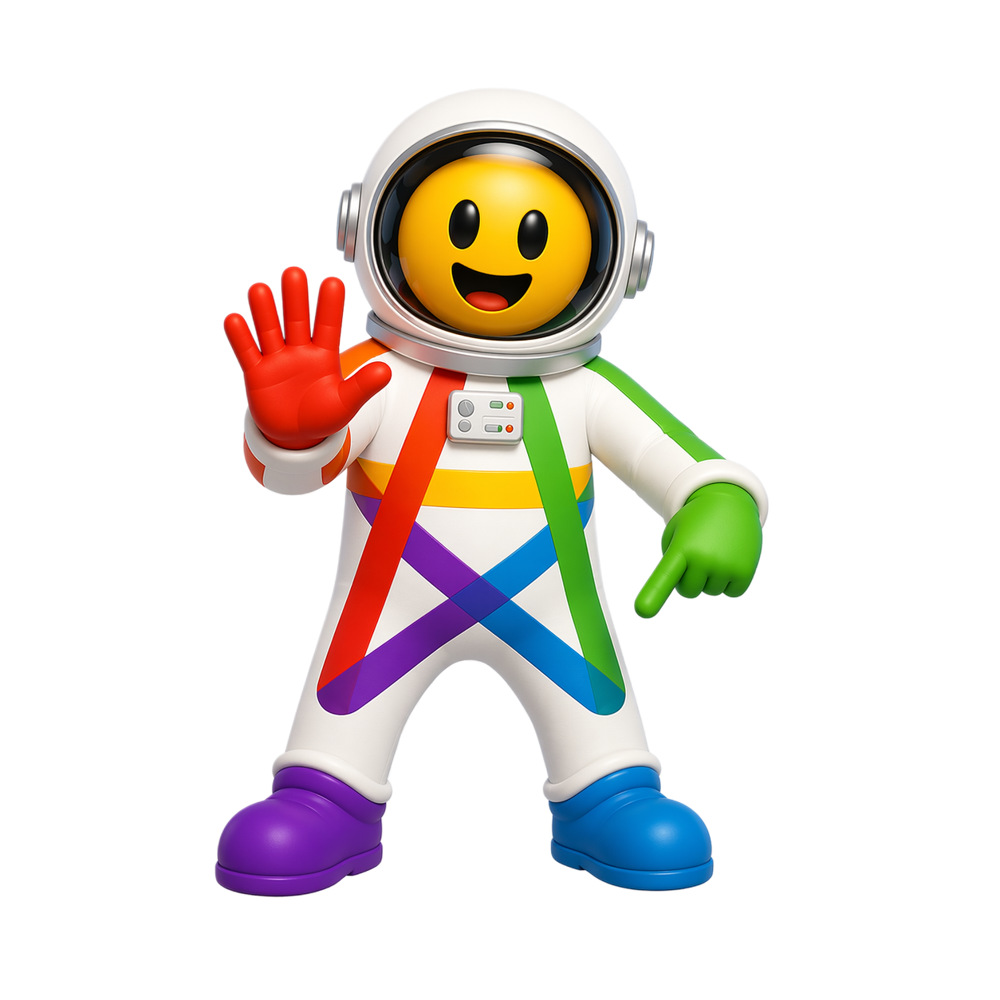
Video „Úvod do Fediverse" — Elena Rossini, CC BY-NC-SA 4.0, český překlad Jan Dytrych.
Nemusíš se bát
Nothing to be afraid of
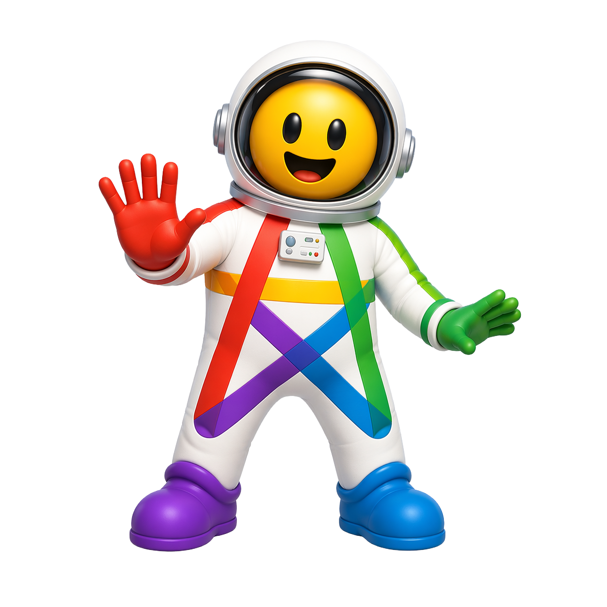
Stačí jeden účet
Z jednoho účtu vidíš a sleduješ lidi napříč celým Fediverse — nezáleží, na kterém serveru jsou.
Instanci můžeš změnit
Když přejdeš jinam, vezmeš si sledující s sebou. Nejsi nikde uvázaný napevno.
Není to krypto
Žádný blockchain. Je to neziskové, otevřené a bez reklam — jen lidé a servery, co si povídají.
One account is enough
From a single account you can see and follow people across the whole Fediverse.
You can move servers
If you switch instances, your followers come with you.
It’s not crypto
No blockchain. It’s non-profit, open and ad-free.
Vyber si loď (aplikaci)
Aplikace je síť, ve které budeš — tvoje loď ve Fediverse. Mastodon je jako Twitter/X, Pixelfed jako Instagram, PeerTube jako YouTube; všechny spolu umí mluvit, protože stojí na stejném základu.
Vyber síť, kterou znáš, nebo typ obsahu — doporučím ti odpovídající loď. Tlačítko „Začít“ tě pošle dál: u hlavních aplikací rovnou na výběr planety (instance), u ostatních na jejich oficiální stránku. Chceš brouzdat sám? Otevři celý katalog Aplikací.
Pick your ship (an app)
An app is the network you’ll live in — your ship in the Fediverse. Mastodon is like Twitter/X, Pixelfed like Instagram, PeerTube like YouTube; they all talk to each other because they share the same foundation.
Pick a network you know, or a type of content — I’ll suggest the matching ship. “Start” takes you onward: for the main apps straight to picking a planet (instance), for the rest to their official page. Want to browse yourself? Open the full Apps catalog.
Vyber z nabídky a ukážu ti odpovídající aplikaci ve Fediverse.
Spokojen s naším doporučením? Pokračuj dalším krokem. Chceš víc možností?
Planeta (instance) je tvůj domovský server — místo, kde budeš přihlášený a které ti dá adresu ve tvaru @jmeno@server. Ať přistaneš kdekoli, sledovat a povídat si můžeš s kýmkoli v celém Fediverse; planeta není klec.
Níže ukazujeme jen planety s otevřenou registrací nebo registrací po schválení, vyfiltrované pro tvou aplikaci. Dej „Vybrat tuhle“ a posuneme tě na krok 4. Nevíš, kam? Použij náš výchozí bod, nebo otevři celý katalog Instancí.
Pro tuhle aplikaci zatím nemáme český katalog instancí. Tlačítko níže tě vezme na oficiální stránku, kde si vybereš server a založíš účet. Pak se vrať sem na krok 4.
Nevíš, kam?Začni třeba na mamutovo.cz — dobře udržovaný český server s rozšířeným limitem 2500 znaků na příspěvek.
Registrace je „po schválení“, takže tě správce pustí ručně — chvilka strpení, zato klidnější start. Není to jediná dobrá volba: v Instancích si můžeš vybrat jinou a kdykoli se přestěhovat.
Pick your planet (an instance)
A planet (instance) is your home server — where you’ll be signed in and which gives you an address like @name@server. Wherever you land, you can follow and talk to anyone across the whole Fediverse; a planet isn’t a cage.
Below we show only planets with open or approval-based sign-up, filtered for your app. Hit “Choose this one” and we’ll move you to step 4. Not sure where? Use our default, or open the full Instances catalog.
We don’t have a Czech instance catalog for this app yet. The button below takes you to the official site, where you pick a server and create your account. Then come back here for step 4.
Not sure where?You could start on mamutovo.cz — a well-maintained Czech server with an extended 2500-character post limit.
Sign-up is approval-based, so an admin lets you in by hand — a short wait, but a calmer start. It’s not the only good choice: pick another in Instances and move anytime.
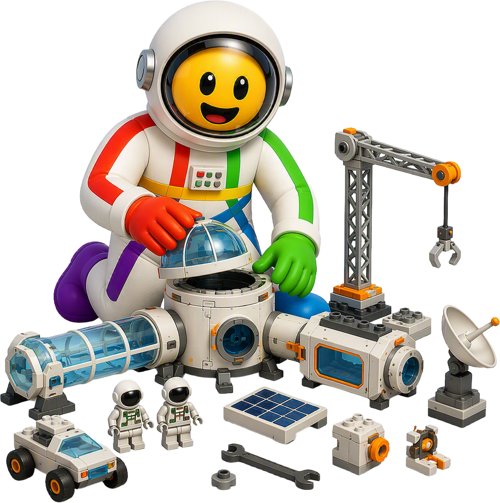
Postav si základnu (založ účet)
Co tě při registraci čeká
Vyplníš uživatelské jméno, e-mail a heslo. Přijde ti potvrzovací e-mail — klikni na odkaz v něm. U serverů „po schválení“ chvíli počkej, než tě správce pustí dovnitř (většinou pár hodin). A jsi uvnitř.
Pozor na uživatelské jméno: smí obsahovat jen písmena bez diakritiky (a–z), číslice a podtržítko (_). Žádné tečky, pomlčky, mezery ani háčky a čárky — místo tečky použij podtržítko (např. jan_novak místo jan.novák). Délka bývá omezená, zhruba na 30 znaků. Jméno je natrvalo, e-mail a heslo změníš, jméno ne — vyber rozumně.
Až budeš mít účet, vrať se sem na Fedíka — dokončíme onboarding: projdeme první den (krok 5) a sestavíme ti posádku, koho sledovat (krok 6).
Build your base (create an account)
What to expect when you sign up
You’ll fill in a username, email and password. A confirmation email arrives — click the link in it. On “approval” servers, wait a moment for the admin to let you in (usually a few hours). And you’re in.
Mind your username: it can only contain plain letters (a–z), numbers and an underscore (_). No dots, hyphens, spaces or accents — use an underscore instead of a dot (e.g. jan_novak, not jan.novák). Length is usually capped at about 30 characters. The username is permanent — you can change your email and password, but not the username, so pick wisely.
Once your account is ready, come back here to Fedík — we’ll finish onboarding: walk through your first day (step 5) and assemble your crew to follow (step 6).
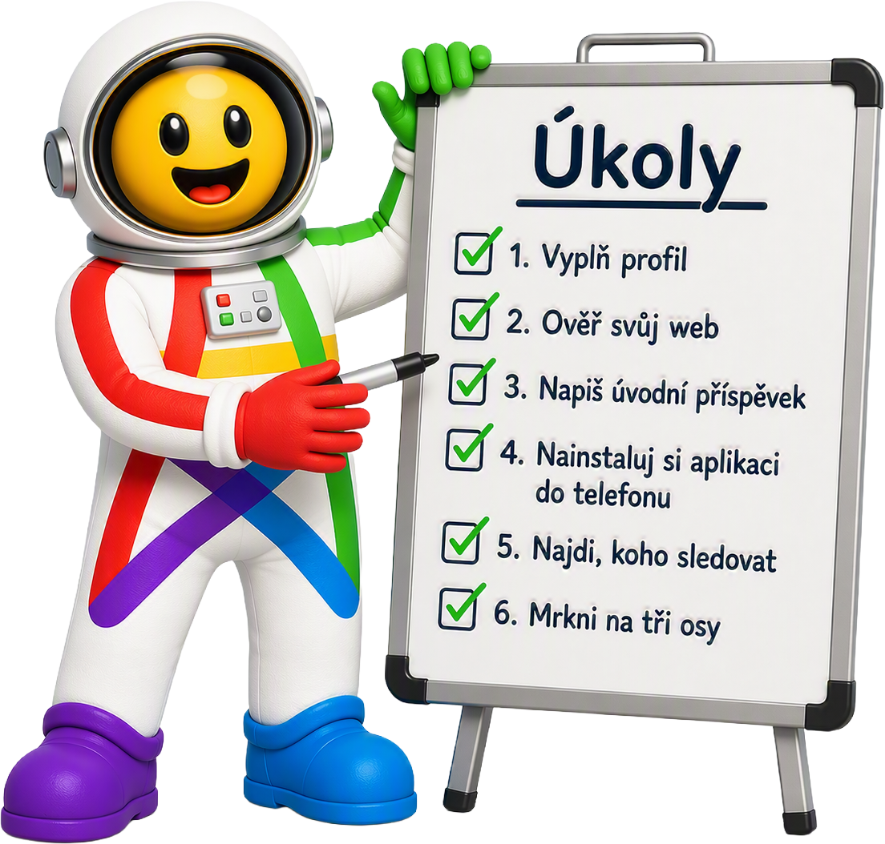
První den na základně
Hotovo, máš účet — prvních šest kroků
Máš základnu (účet) — teď ji oživíš. Prvních pár kroků rozhoduje o tom, jestli tě Fediverse chytne, nebo ti přijde prázdný a tichý.
Projdi šest úkolů níže popořadě; každý je otázka minut. Pak mrkni na „pět věcí, co tu chodí jinak" — drobné zvyky, díky kterým tě komunita líp přijme.
Vyplň profil — avatar, krátké bio a hlavičku. Účty, co nevypadají prázdně, lidi spíš sledují.
Ověř svůj web odkazem rel=me — u profilu pak svítí, že web je fakt tvůj.
Napiš úvodní příspěvek s #nazdar nebo #introductions a připni ho — lidé tě podle něj najdou.
Vybav si základnu klientem — se svou aplikací (sítí) můžeš používat i klientské appky, pohodlnější na telefonu.
Mrkni na tři osy: Domácí (koho sleduješ), Lokální (tvůj server) a Federovaná (širý Fediverse).Slovníček ↗
Pět věcí, co tu chodí jinak
Žádná pravidla na krev, jen drobné zvyky, díky kterým tě komunita líp přijme.
Citlivá témata schovej pod CW (varování obsahu) — čtenář si rozklikne, co chce.Slovníček ↗
K obrázkům přidávej alt text — popis pro lidi, co obrázek nevidí. Tady je to slušnost.Slovníček ↗
Používej hashtagy — vyhledávání jede hlavně přes ně, ne přes plný text.Slovníček ↗
Sdílej boostem (jako repost). Citování s komentářem tu skoro není — schválně, kvůli klidu.Slovníček ↗
Před odesláním zkontroluj viditelnost příspěvku (veřejný / jen sledující / přímý) — vybíráš ji u každého postu.Slovníček ↗
Your first day at the base
You’ve got an account — your first six steps
You’ve got a base (account) — now you bring it to life. The first few steps decide whether the Fediverse clicks or feels empty and quiet.
Go through the six tasks below in order; each takes minutes. Then check the “five things that work differently here” — small habits that help the community welcome you.
Fill in your profile — avatar, a short bio and a header. People follow accounts that don’t look empty.
Verify your website with a rel=me link — your profile then shows the site is really yours.
Post an intro with #introductions and pin it — that’s how people find you.
Kit out your base with a client — your app (network) also works through client apps, handier on a phone.
Find people to follow — start with Sloník and the Zprávobot catalog above.Find people ↓
Check the three timelines: Home (who you follow), Local (your server) and Federated (the wider Fediverse).Glossary ↗
Five things that work differently here
No strict rules — just small habits that help the community welcome you.
Put sensitive topics behind a CW (content warning) — readers open what they want.Glossary ↗
Add alt text to images — a description for people who can’t see them. Here it’s basic courtesy.Glossary ↗
Use hashtags — discovery runs mostly through them, not full-text search.Glossary ↗
Share with a boost (like a repost). Quote-posting is rare here — deliberately, to keep things calm.Glossary ↗
Before sending, check the post visibility (public / followers / direct) — you choose it per post.Glossary ↗
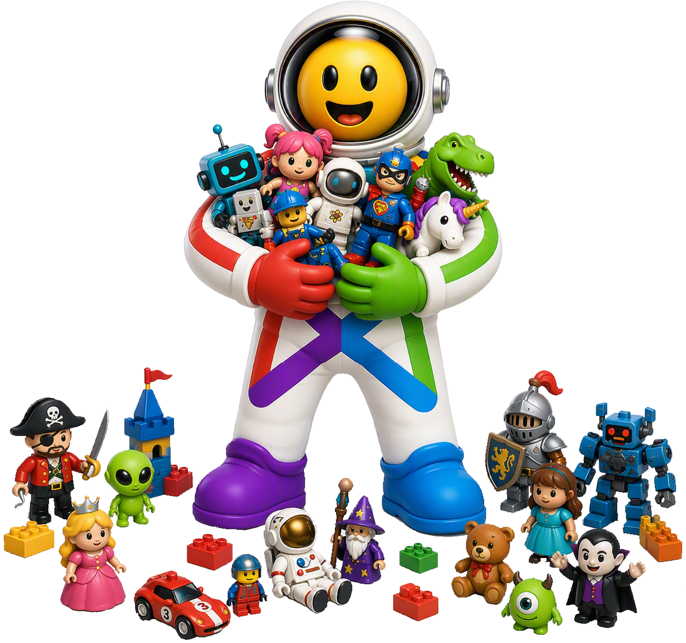
Sestav posádku (najdi lidi)
Ať doma není prázdno: koho sledovat
Prázdná domácí osa je nejčastější důvod, proč lidé Fediverse opustí po prvním dni — není koho číst. Posádka (lidé, které sleduješ) tvoří celý tvůj zážitek; žádný algoritmus to za tebe neudělá.
Tady jsou dvě kurátorované kotvy: Sloník.online pro živé české a slovenské účty a katalog.zpravobot.news pro boty se zprávami a obsahem. Vyber pár podle zájmů, sleduj je z vlastní instance — a osa se rozjede.
An empty home timeline is the top reason people leave the Fediverse after day one — no one to read. Your crew (the people you follow) is your whole experience; no algorithm does it for you.
Here are two curated anchors: Sloník.online for live Czech and Slovak accounts, and katalog.zpravobot.news for bots with news and content. Pick a few by interest, follow them from your own instance — and your timeline comes alive.
Aplikace jsou lodě Fediverse — software, kterým do něj vstoupíš. Každá se hodí na něco jiného: mikroblog, fotky, video, fórum, blog. Všechny si ale spolu umí povídat, takže ať si vybereš kteroukoliv, pořád jsi na jedné síti.
Najdeš tu přehled aplikací s tím, čemu se podobají z běžných sítí, počtem uživatelů a instancí a jestli mají české rozhraní. Údaje o velikosti jsou orientační z FediDB. Filtruj podle typu obsahu, obdoby známé sítě nebo češtiny v UI.
Instance jsou planety, na kterých můžeš přistát — servery, kde si založíš účet. Liší se velikostí, zaměřením i náladou, ale všechny patří do jednoho Fediverse, takže odkudkoli dosáhneš na kohokoli.
Najdeš tu české a slovenské instance z katalogu Sloník.online — u každé velikost, aktivitu, stav registrace a počet účtů, které jsou v katalogu. Instance jsou seřazeny podle počtu aktivních uživatelů. Můžeš filtrovat podle aplikace, regionu a zaměření. Filtr "Pro začátečníky" zobrazí prověřené instance.
Nástroje jsou palubní vybavení fedinauta — klienti do telefonu, mosty mezi sítěmi, objevovače účtů, crosspostery a další pomocníci, kteří ti cestu zpříjemní. Tvoje aplikace funguje i bez nich, ale s nimi je pohodlnější.
Klienti jsou z FediDB, zbytek je pečlivě připravený výběr živých nástrojů. Můžeš filtrovat podle kategorie (klient, most, migrace, RSS, …), platformy (Android, iOS, web, desktop), ceny, ale hlavně podle aplikace — ať vidíš jen to, co se hodí k tvé síti.
Slovníček je palubní příručka — Fediverse má vlastní nářečí (instance, federace, boost, CW…) a první týden v něm zní leccos cize. Tady si kterýkoli výraz v klidu dohledáš.
Najdeš tu hesla, od základních pojmů až po praktické postupy, vysvětlená česky a bez žargonu. Hledej podle názvu nebo proklikni z výrazů v průvodci, které na Slovníček odkazují.
Statistiky jsou pohled z oběžné dráhy — Fediverse i tenhle katalog v číslech. Kolik je aplikací, instancí a nástrojů a jak se to v čase hýbe.
Čísla vycházejí z dat, na kterých Fedík stojí (FediDB, Sloník.online a kurátorské seznamy), s datem poslední aktualizace u každé sady. Berou se orientačně — Fediverse se mění každý den.
Odkazy jsou majáky do dalekého vesmíru — když ti Fedík nestačí a chceš číst, sledovat dění nebo se hlouběji zapojit. Rozcestník ven za hranice tohohle průvodce.
Pečlivě vybraný přehled českých a zahraničních zdrojů o Fediversu: weby, blogy, komunity a další průvodci. Vybíráme jen živé a smysluplné odkazy, ne všechno, co existuje.
Prohledá aplikace, instance, nástroje, slovníček a odkazy — bez ohledu na diakritiku.
Tip: víc slov = musí být všechna; přesnou frázi dej do uvozovek („…"), slovo vylučíš mínusem (-slovo).
O Fedíku
Fedík.online je český rozcestník po
Fediverse —
propojené síti nezávislých sociálních sítí (Mastodon, Pixelfed, PeerTube a další).
Není to sociální síť ani účet; je to průvodce, který Fediverse
vysvětlí česky a pomůže ti udělat první krok.
Je pro každého, kdo o Fediverse slyšel a neví, kde začít — od
úplných nováčků až po lidi, kteří hledají konkrétní aplikaci, server nebo nástroj.
Všechno bez přihlášení a bez sledování.
Fedík nabízí tyto pohledy:
Začínáme — co je Fediverse a jak v něm začít.
Aplikace — katalog fediverse aplikací podle typu obsahu.
Instance — kde si založit účet (CZ/SK i prověřené globální).
Nástroje — klienti, mosty, objevovače a další.
Slovníček a Statistiky — pojmy a postupy + pár čísel o síti.
Fedík.online is a Czech guide to the
Fediverse —
the connected network of independent social networks (Mastodon, Pixelfed, PeerTube and more).
It isn't a social network or an account; it's a guide that explains
the Fediverse and helps you take the first step.
It's for anyone who has heard of the Fediverse and doesn't know
where to start — from complete newcomers to people looking for a specific app,
server or tool. No login, no tracking.
Fedík offers these views:
Start here — what the Fediverse is and how to begin.
Apps — a catalog of fediverse apps by content type.
Instances — where to create an account (CZ/SK and vetted global).
Tools — clients, bridges, discovery tools and more.
Glossary and Stats — terms and how-tos plus a few network numbers.
Links — articles, guides and videos about the Fediverse.
Search — full text across Fedík’s content (apps, instances, tools, glossary, links).
Do pole napiš, co hledáš — Fedík prohledá svůj vlastní obsah: aplikace,
instance, nástroje, hesla Slovníčku a odkazy. Nezáleží na velikosti písmen ani diakritice
(napíšeš „mastodon", najde „Mastodon") a celé to běží v prohlížeči, bez přihlášení.
Výsledky podle typu
Nálezy jsou seskupené do sekcí podle typu — Aplikace, Instance, Nástroje,
Slovníček, Odkazy — a zobrazené jako plné karty, stejné jako v příslušných pohledech.
Záložkami nahoře (Vše / Aplikace / Instance / …) si necháš zobrazit jen jeden typ.
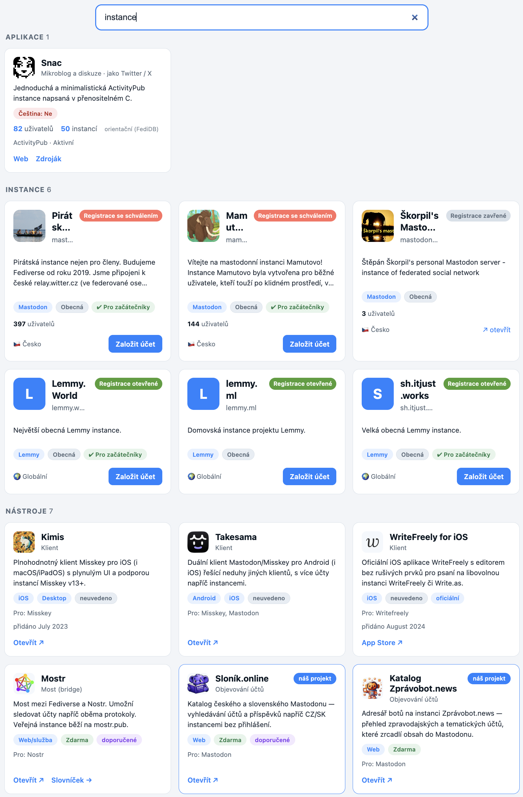
Jak hledat
Víc slov = musí se objevit všechna (logické „a zároveň"). Přesnou frázi
uzavři do uvozovek — „content warning" najde jen to spojení.
Slovo vyloučíš mínusem — mastodon -klient. Slovníček hledá
i podle aliasů, takže „CW" najde heslo „varování obsahu".
Working with Search
Type what you're looking for — Fedík searches its own content: apps,
instances, tools, glossary entries and links. It's case- and diacritics-insensitive
(type “mastodon”, it finds “Mastodon”) and runs entirely in the browser, no login.
Results by type
Matches are grouped into sections by type — Apps, Instances, Tools, Glossary,
Links — shown as full cards, the same as in the respective views. The tabs on top
(All / Apps / Instances / …) let you show just one type.
How to search
Multiple words = all must appear (logical AND). Wrap an exact phrase in
quotes — “content warning” matches only that pairing.
Exclude a word with a minus — mastodon -client. The glossary
also matches aliases, so “CW” finds the entry “content warning”.
Jak pracovat s Aplikacemi
Pohled Aplikace je kurátorský katalog fediverse aplikací — co všechno
na Fediverse existuje a co která appka umí. Hodí se, když si vybíráš, kam si založit účet.
Co karta ukazuje
Logo a název, typ obsahu a obdobu známé sítě (např. „jako Twitter / X"),
odznak češtiny v rozhraní (ano / částečně / ne), živá čísla (uživatelé
a instance z FediDB), protokol a stav vývoje. Odkazy vedou na registraci, web a zdroják.
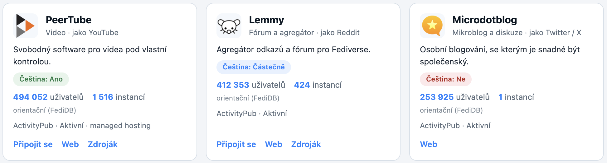
Filtry (levý panel)
Typ obsahu — mikroblog, fotky, video, fórum, hudba…
Obdoba — kterou komerční síť aplikace nahrazuje.
Čeština — má appka české rozhraní (ano / částečně / ne).
Managed hosting — jde použít bez vlastního serveru.
Vývoj — aktivní / zralý / experimentální / utlumený.
Žebříčky a řazení
Záložky nahoře: Vše, Nejvíc uživatelů,
Nejvíc instancí, Nejrychleji rostoucí a
Nové projekty. V „Vše" řadíš podle abecedy nebo počtu uživatelů/instancí
(výchozí je Nejvíc uživatelů). Čísla jsou orientační — z FediDB.
Working with Apps
The Apps view is a curated catalog of fediverse apps — what exists out
there and what each app does. Handy when choosing where to create an account.
What a card shows
Logo and name, content type and the mainstream equivalent (e.g. “like
Twitter / X”), the Czech UI badge (yes / partial / no), live numbers
(users and instances from FediDB), protocol and development status. Links go to sign-up,
the website and the source code.
Filters (left panel)
Content type — microblog, photos, video, forum, music…
Equivalent — which mainstream network the app replaces.
Czech UI — whether the app has a Czech interface (yes / partial / no).
Managed hosting — usable without running your own server.
Development — active / mature / experimental / dormant.
Rankings and sorting
Tabs on top: All, Most users, Most instances,
Fastest growing and New projects. In “All” you sort
alphabetically or by users/instances (default is Most users). Numbers are indicative — from FediDB.
Jak pracovat s Nástroji
Pohled Nástroje sdružuje klienty (aplikace pro Fediverse), mosty,
objevovače a další pomocníky — to, čím si Fediverse osladíš.
Co karta ukazuje
Logo a název, kategorii (klient, most, objevování, RSS, migrace),
platformy (Android, iOS, web, desktop), cenu a odznaky (oficiální /
doporučené). Odkaz Otevřít u jednoplatformních appek vede přímo do
App Store / Google Play / F-Droidu; „Zdroják" na repozitář.
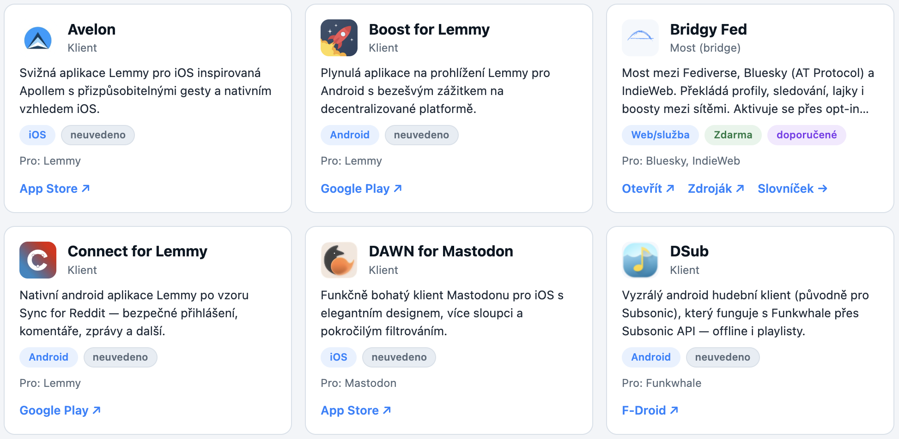
Filtry a žebříčky
Kategorie, Platforma, Pro aplikaci a Cena.
Záložky: Vše · Doporučené · Nově přidané.
Working with Tools
The Tools view gathers clients (apps for the Fediverse), bridges,
discovery tools and other helpers — the things that make the Fediverse nicer.
What a card shows
Logo and name, category (client, bridge, discovery, RSS, migration),
platforms (Android, iOS, web, desktop), price and badges (official /
featured). For single-platform apps the Open link goes straight to the
App Store / Google Play / F-Droid; “Source” to the repository.
Filters and rankings
Category, Platform, For app and Price.
Tabs: All · Featured · Recently added.
Jak pracovat s Instancemi
Pohled Instance je adresář serverů, kde si reálně
založíš účet — české a slovenské (ze Sloníka) i prověřené globální.
Pomůže ti vybrat, kam patříš.
Co karta ukazuje
Logo a název, krátký popis, počet uživatelů, měsíční aktivitu, počet
příspěvků a stav registrací. Tlačítko Založit účet vede přímo na
registraci dané instance.
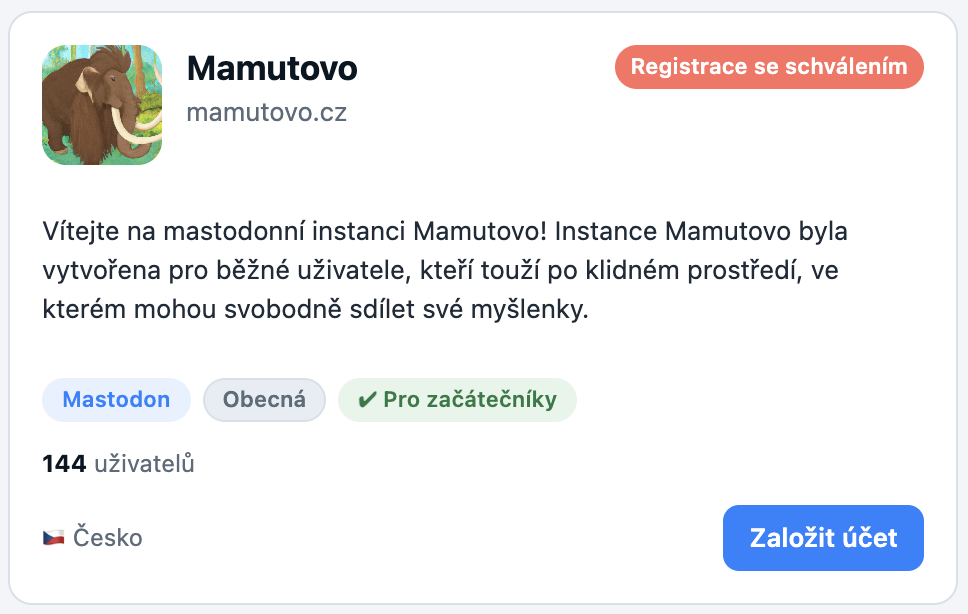
Žebříčky
Nahoře přepínáš mezi Vše, Pro začátečníky
(stojí na prověřenosti, ne na velikosti) a Nejvíc uživatelů.
Filtry
Vlevo Vyhledat, Řadit a fasety
Region, Aplikace a Zaměření instance.
Working with Instances
The Instances view is a directory of servers where you can actually
create an account — Czech and Slovak (from Sloník) plus vetted global
ones. It helps you pick where you belong.
What a card shows
Logo and name, a short description, the user count, monthly activity, post
count and registration status. The Create account button goes straight
to that instance's sign-up.
Rankings
At the top you switch between All, For beginners
(based on vetting, not size) and Most users.
Filters
On the left: Search, Sort and the
Region, App and Focus facets.
Jak pracovat s Odkazy
Pohled Odkazy je kurátorovaný rozcestník kvalitních článků
a návodů o Mastodonu a fediverse — česky i anglicky. Karty jsou seskupené
podle typu.
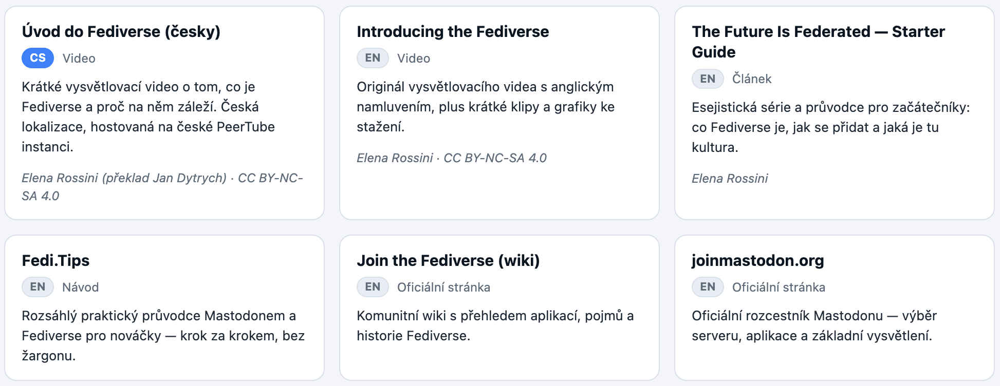
Filtry (levý panel / menu)
Typ — Vysvětlení, Návody, Pro provozovatele, Kontext.
Jazyk — čeština, angličtina.
Karta odkazu
Titul je odkaz na článek (otevře se v nové záložce). Pod ním
je jazyk, zdroj a aktuálnost — většina českých textů je z migrační vlny
2022/2023; obsahově drží, ale detaily prostředí se od té doby mohly změnit, proto
u každého uvádíme, jak je starý.
Working with Links
The Links view is a curated set of quality articles and guides
about Mastodon and the fediverse — Czech and English. Cards are grouped by type.
Filters (left panel / menu)
Type — Explainers, Guides, For instance admins, Context.
Language — Czech, English.
Link card
The title is a link to the article (opens in a new tab). Below it
you'll find the language, source and freshness — most Czech texts date from
the 2022/2023 migration wave; the substance holds up, but UI details may have changed
since, so each one notes how old it is.
Jak pracovat se Statistikami
Pohled Statistiky ukazuje Fediverse i tenhle katalog v číslech —
kolik je aplikací, instancí, nástrojů a uživatelů a jak se to v čase hýbe. Slouží
k přehledu, ne k přesnému měření.
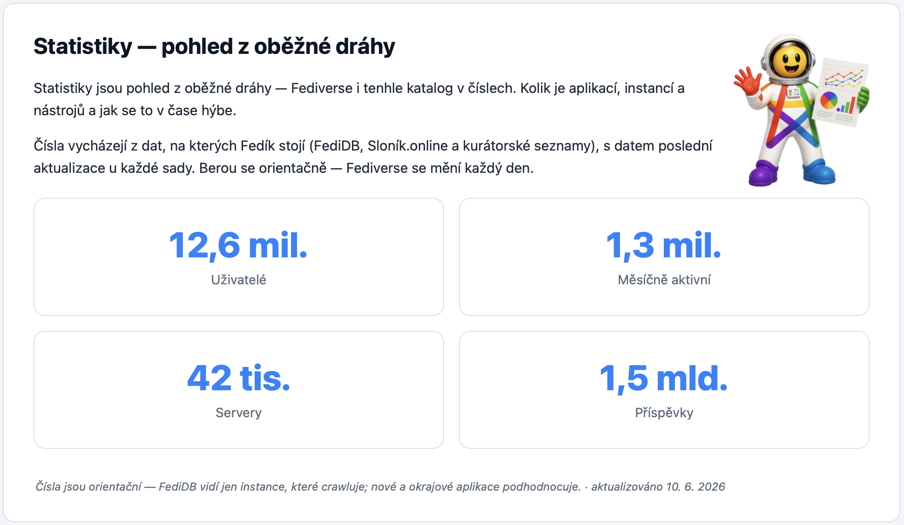
Záložky
Přehled — souhrnná čísla sítě a katalogu.
Podle aplikací — uživatelé a instance po jednotlivých aplikacích.
Růst — vývoj v čase (přibývání uživatelů a instancí).
CZ/SK — česká a slovenská část sítě zvlášť.
Odkud čísla jsou
Ze stejných zdrojů jako pohledy Aplikace a Instance — FediDB,
Sloník.online a kurátorské seznamy. Nic se nesbírá navíc. U každé sady
je datum poslední aktualizace.
Proč jsou orientační
Vidíme jen instance, které crawlery znají, a počty CZ/SK uživatelů jsou
dolní odhad — počítají jen účty na českých a slovenských
instancích, ne Čechy a Slováky na globálních serverech. Berte čísla jako řádový odhad,
ne přesnou hodnotu.
Working with Statistics
The Statistics view shows the Fediverse and this catalog in numbers —
how many apps, instances, tools and users there are and how it shifts over time. It’s for
an overview, not precise measurement.
Tabs
Overview — summary numbers for the network and the catalog.
By app — users and instances per individual app.
Growth — change over time (users and instances added).
CZ/SK — the Czech and Slovak part of the network separately.
Where the numbers come from
The same sources as the Apps and Instances views — FediDB,
Sloník.online and curated lists. Nothing extra is collected. Each set has
a last-updated date.
Why they’re indicative
We only see instances crawlers know about, and the CZ/SK user counts are a
lower bound — they count only accounts on Czech and Slovak
instances, not Czechs and Slovaks on global servers. Treat the numbers as a ballpark, not
an exact figure.
FAQ — časté otázky
Proč se to jmenuje zrovna Fedík?
Začalo to u sourozeneckého projektu Sloník.online:
síť Mastodon má ve znaku mastodonta (příbuzného dnešním slonům) a katalog chtěl být tak trochu
slovníkem českého Mastodonu — slon + slovník =
Sloník. Fedík je jeho přirozená evoluce pro celý Fediverse:
Fediverse + slovník = Fedík.
Některé aplikace, instance nebo čísla tu chybí nebo nesedí. Proč?
Fedík ukazuje jen to, co vidí veřejné zdroje. Čísla jsou orientační —
síťové statistiky vidí jen instance, které crawlery znají, a počty CZ/SK uživatelů jsou
dolní odhad (jen účty na českých a slovenských instancích, ne Čechy a Slováky
na globálních serverech). Katalog aplikací, nástrojů a odkazů je navíc ručně
kurátorovaný, takže nemusí být úplný.
Chybí tu aplikace, nástroj nebo odkaz — nebo něco nesedí?
It started with the sibling project Sloník.online:
Mastodon depicts a mastodon (a relative of today's elephants) and the catalog wanted to be a bit of a
dictionary of the Czech fediverse — slon (elephant) + slovník
(dictionary) = Sloník. Fedík is its natural evolution for the whole
Fediverse: Fediverse + slovník = Fedík.
Some apps, instances or numbers are missing or look off. Why?
Fedík only shows what public sources can see. The numbers are indicative —
network stats only cover instances crawlers know about, and the CZ/SK user counts are a
lower bound (only accounts on Czech and Slovak instances, not Czechs and Slovaks
on global servers). The catalog of apps, tools and links is also hand-curated,
so it may not be complete.
An app, tool or link is missing — or something's wrong?
U serverů „po schválení“ tě musí ověřit správce. Většinou to trvá pár hodin, někdy do druhého dne. Přijde ti e-mail. Zatím můžeš v klidu projít zbytek tipů tady.
Nemůžu najít kamaráda — jak ho najdu?
Potřebuješ jeho celou adresu ve tvaru @jmeno@server.cz. Vlož ji do vyhledávání ve své aplikaci a dej Sledovat. Samotné „@jmeno“ nestačí — server je důležitý.
Jak se přestěhuju na jiný server?
Mastodon to má přímo vestavěné: na novém účtu nastavíš alias na starý, na starém spustíš přesun a sledující se přenesou automaticky. Příspěvky se nepřenášejí, profil a sledující ano.Slovníček ↗
Domácí timeline je prázdná, je to normální?
Úplně. Domácí osa ukazuje jen lidi, které sleduješ — na začátku tam nikdo není. Začni sledovat účty přes Sloník.online a katalog.zpravobot.news a hned se zaplní.
Tipy pro Mastodon
Hlídej si jazyk příspěvku — Mastodon u každého tootu nastavuje jazyk. Český příspěvek omylem poslaný jako anglický se neobjeví v české federované ose (a naopak) — před odesláním zkontroluj.
Vyplň profil hned na začátku — Avatar, krátké bio a pár prvních příspěvků. Prázdné účty vypadají neaktivně nebo jako spam — lidi je nesledují a správci je občas promazávají.
Citování místo boostu — Mastodon historicky neměl nativní citace (quote posts), takže se používal workaround s novým příspěvkem a odkazem. V novějších verzích (např. 4.5) už ale citace existují – pokud je instance a autor povolí.
Číst jde i bez účtu — Nechceš se registrovat a jen sledovat? K profilu přidej .rss (https://server/@jméno.rss) a vlož do RSS čtečky.
Ztlum, ať máš klid — Zahlcená osa? Ztlum účty nebo hashtagy, které tě nezajímají (mute) — federovaná i domácí osa jsou pak hned čitelnější.
Seznamy na úklid domácí osy — Roztřiď sledované do seznamů a ty nedůležité skryj z domácí osy („Skrýt členy na domovském kanálu“). Specifická témata — sport, hudbu — pak čteš, když chceš.
Pozor na editaci ankety — Když upravíš už běžící anketu, vynuluje se a poběží od začátku. Před odesláním ji proto pečlivě zkontroluj.
Přizpůsob si vzhled — Nelíbí se ti webový klient? Zkus alternativní (Elk, Phanpy) nebo do prohlížeče přidej rozšíření Stylish a téma TangerineUI.
For beginners
Common questions
My sign-up is waiting for approval — now what?
On “approval” servers an admin has to let you in. It usually takes a few hours, sometimes by the next day. You’ll get an email. Meanwhile, feel free to go through the rest of the tips here.
I can’t find my friend — how do I find them?
You need their full address as @name@server.com. Paste it into your app’s search and hit Follow. Just “@name” isn’t enough — the server matters.
How do I move to another server?
Mastodon does this built-in: set an alias on the new account pointing to the old one, start the move on the old one, and your followers transfer automatically. Posts don’t move, but your profile and followers do.Glossary ↗
My home timeline is empty — is that normal?
Totally. The home timeline only shows people you follow — at the start there’s no one. Start following accounts via Sloník.online and katalog.zpravobot.news and it fills up fast.
Mastodon tips
Mind your post’s language — Mastodon sets a language for every post. A Czech post accidentally sent as English won’t show in the Czech federated timeline (and vice versa) — check before posting.
Fill in your profile right away — Avatar, a short bio and a few first posts. Empty accounts look inactive or spammy — people won’t follow them and admins sometimes prune them.
Quoting instead of boosting — Mastodon has no native quote-repost. To comment on a post, write a new one like “Ad @name@server: …” and add a link to the original.
You can read without an account — Don’t want to sign up and just want to read? Add .rss to a profile (https://server/@name.rss) and drop it into an RSS reader.
Mute for peace and quiet — Timeline too noisy? Mute the accounts or hashtags you don’t care about — the federated and home timelines get readable fast.
Lists to tidy your home feed — Sort who you follow into lists and hide the less important ones from your home feed (“Hide members from Home”). Read specific topics — sport, music — when you want.
Careful editing a running poll — If you edit a poll that’s already running, it resets and starts over. So check it carefully before posting.
Customize the look — Don’t like the web client? Try an alternative (Elk, Phanpy) or add the Stylish browser extension with a theme like TangerineUI.
Technické řešení
Fedík.online je úmyslně jednoduchý: web je čistě statický
(HTML, CSS a trocha JavaScriptu), bez serverové aplikace, bez přihlašování
a bez cookies. Návštěvnost měříme jen anonymně a agregovaně
(self-hosted Umami na OSCLOUD),
bez osobních údajů. Všechna data jsou připravená předem — web jen zobrazuje hotové.
Odkud čerpá data
Fedík nemá vlastní crawler. Katalog aplikací a živá čísla
(uživatelé, instance) bere z FediDB
a jeho communityDB;
českou a slovenskou část — instance, účty i statistiky — ze
Sloník.online.
Texty a výběr aplikací, nástrojů a odkazů píše a udržuje člověk.
Kurace a kategorizace
Typ obsahu, „čeština v rozhraní" a stav vývoje u aplikací jsou ruční kurace;
loga jsou stažená lokálně (žádné hotlinky). Statistiky stojí na týchž vrstvách (FediDB +
Sloník) — nic se nesbírá navíc oproti pohledům Aplikace a Instance.
Provoz a publikace
Hotová data se nahrávají na statický hosting. Kód je oddělený od dat a přístupové
tokeny nikdy nejsou součástí webu. Fedík pracuje výhradně s veřejnými daty
a otevřenými rozhraními.
Fedík.online is deliberately simple: the site is fully static
(HTML, CSS and a bit of JavaScript), with no server application, no login and no
cookies. Traffic is measured only anonymously and in aggregate
(self-hosted Umami on OSCLOUD),
with no personal data. All data is prepared in advance — the site just displays the result.
Where the data comes from
Fedík has no crawler of its own. The app catalog and live numbers
(users, instances) come from FediDB
and its communityDB;
the Czech and Slovak part — instances, accounts and stats — from
Sloník.online.
The texts and the selection of apps, tools and links are written and maintained by a human.
Curation and categorization
Content type, “Czech UI” and development status for apps are hand-curated;
logos are downloaded locally (no hotlinks). Stats are built on the same layers (FediDB +
Sloník) — nothing extra is collected beyond the Apps and Instances views.
Operation and publishing
The finished data is uploaded to static hosting. Code is kept separate from data and
access tokens are never part of the website. Fedík works exclusively with public
data and open interfaces.
Za Fedíkem stojí Daniel Šnor — nadšenec do Mastodonu a celé
sítě Fediverse z českého prostředí.
Provozuje projekt Zprávobot.news —
veřejně prospěšnou službu, která zrcadlí oblíbené primárně české a slovenské
X/Twitter účty a přináší na Mastodon a Bluesky jinak chybějící zprávy,
sport, informace o technologiích, kultuře, a někdy i humor,
a katalog Sloník.online —
mapu českého a slovenského Mastodonu (lidé, instance, příspěvky). Fedík
z téhle rodiny vyrostl jako přirozené rozšíření: zatímco Sloník mapuje český
a slovenský Mastodon, Fedík vysvětluje celý Fediverse česky a provede
tě prvními kroky.
Daniel Fediverse fandí jako otevřené a decentralizované alternativě ke komerčním sítím —
bez algoritmů, reklam a sledování uživatelů.
Fedík is made by Daniel Šnor — a Czech enthusiast of Mastodon
and the wider Fediverse.
He runs the Zprávobot.news
project — a public-benefit service that mirrors popular, primarily Czech and
Slovak X/Twitter accounts, bringing otherwise-missing news, sport, technology,
culture and sometimes humor to Mastodon and Bluesky.
And the Sloník.online
catalog — a map of the Czech and Slovak Mastodon (people, instances, posts).
Fedík grew out of this family as a natural extension: while Sloník maps
the Czech and Slovak part, Fedík explains the whole Fediverse (in Czech)
and walks you through your first steps.
He’s a fan of the Fediverse as an open, decentralized alternative to commercial
networks — no algorithms, ads or user tracking.